| TOP | ブログ | 備忘録 | Works | リンク |
CUBASE 覚書 空白プロジェクトの作成 ・新規プロジェクトを作成（「空白」のプロジェクトを作ります） 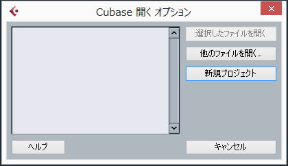 「空白」を選択。 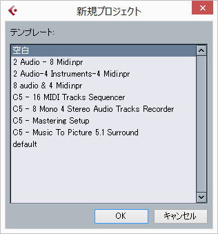 VSTインスツルメントの設定 ・デフォルトではへんなフォルダになっているので自分の環境に合わせてフォルダを設定する。 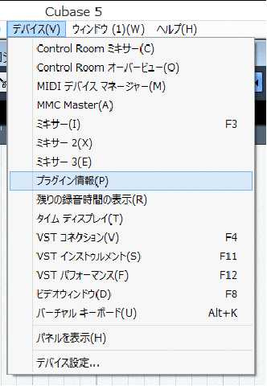 ＶＳＴインスツルメントの設定 ・[プラグインのパス]を追加、変更する 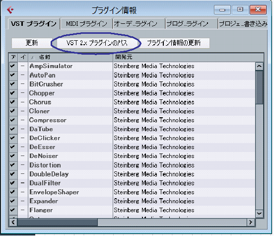 ・今どき「Common File」なんて使わないしVST入ってないから消す。 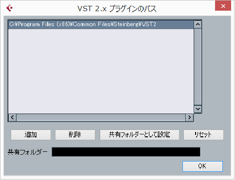 ・VSTの入っているフォルダを片っ端から設定して[OK]ボタンをクリック。 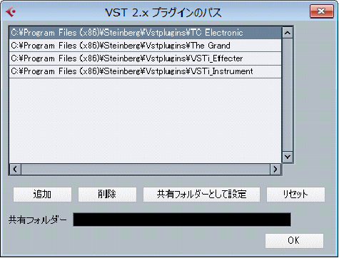 ・「更新」 [プラグイン情報の更新]ボタンをクリック。 ・砂時計が出ないときがあるので、しばし待つ。 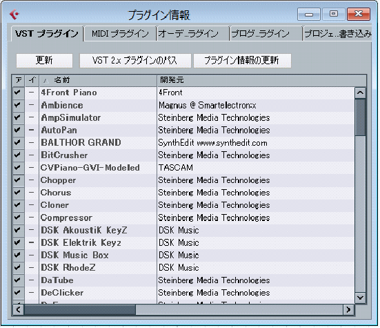 ＶＳＴインスツルメントの追加 ・Ｃｔｒｌ＋Ｆ１１ 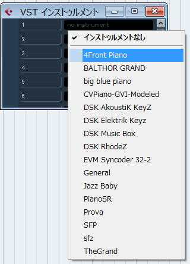 右クリックでMIDIトラックを追加 ・画面左に「M」「S」「R」「W」と書いてある列の、その文字の下あたりを右クリックすると「MIDIトラックを追加」という項目が出てく るのでそこでMIDIトラックを追加します。 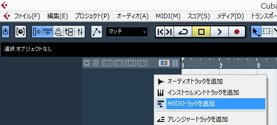 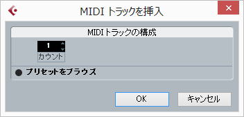 MIDIポートの設定 ・「MIDI IN」の設定、下が「MIDI OUT」 ・MIDIトラックを作成すると一番左の列に作業ウィンドウが表示されます。 上から3段目あたりの横長のフィールド2つがMIDIイン・アウトの設定です。 （フィールドの先頭に、右矢印のアイコンが書いてあるところです） そのフィールドをクリックするとMIDI INのポート、OUTのポートを選択できます。 ・MIDIトラックの表示内の「◎」のところが録音ボタンです。これが赤色になっていると録音可能になります。 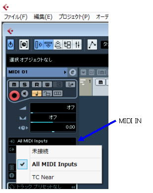 パンチｉイン．アウトのセッティング ・トランスポートパネル（長細い、"1.1.1.0"という表示になっているパネル）の"L"と"R"と書いてあるところがパンチイン、パンチ アウトのポイ ントです。 ここでインとアウトのポイントを設定します。 設定後、LとRの下の記号をクリックするとインポイント、アウトポイントがセットされます。 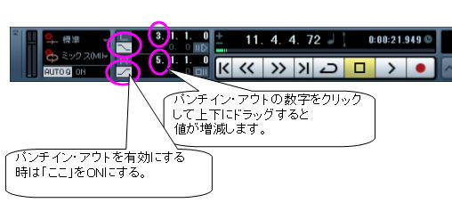 メトロノームの設定 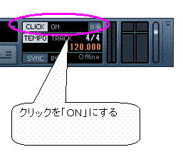 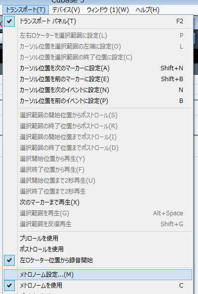 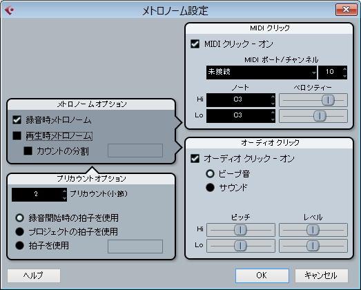
拍子、テンポの設定 ・BPMや拍子を変更するときはCtrl+Tを押下します。左上に表示されている"4/4"というところが拍子の設定となります。これをダ ブルクリックして任意の拍子に設定します。 また、「テンポ」というところでBPMの設定をします。 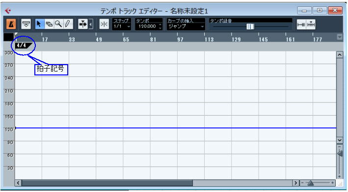 ・MIDI情報を録音するときはパンチインアウトの設定をしていれば、再生ボタンもしくはスペースキー押下でパンチインポイントか ら録音になります。 もしパンチインポイントを設定していない場合は、テンキーのアスタリスク押下で録音開始となります。 Z・録音するMIDI情報をクオンタイズ（演奏情報を設定した拍子とあうように自動補正する機能です）する場合はトランスポートパ ネル左下にある"Auto Q"という場所をOFFからONに変更します。 ・録音が完了すると、録音情報がバーになって表示されます。これをダブルクリックするとピアノロール（演奏情報が棒のようなも ので表示される画面）が表示されます。 ここで場所や長さなどを調整できます。
|